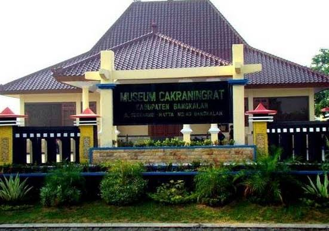

Selamat Datang di Museum Cakraningrat
Museum Cakraningrat adalah museum yang terletak di Jalan Soekarno Hatta No. 39 A, Kabupaten Bangkalan, Pulau Madura. Museum ini didirikan pada tahun 2007 oleh Gubernur Jawa Timur, Bapak Imam Utomo. Museum ini diresmikan pada tanggal 13 Maret 2008. Nama Museum Cakraningrat digunakan untuk mengenang dan menghormati jasa dan kebesaran Pangeran Cakraningrat. Pada awal berdiri, benda-benda koleksi museum ini berpindah-pindah tempat dan berganti nama tempatnya. Pada tanggal 13 Maret 2008 Pemerintah Kabupaten Bangkalan mulai antusias memperhatikan peninggalan-peninggalan bersejarah yang ada di Kabupaten Bangkalan sehingga dibangun bangunan gedung museum baru dengan nama Museum Cakraningrat.